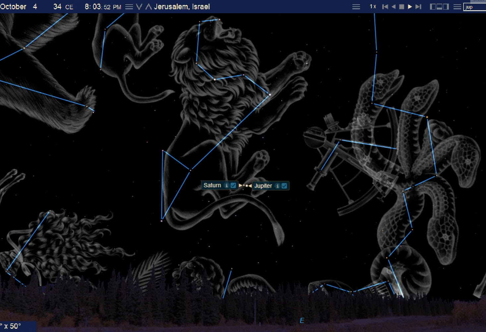
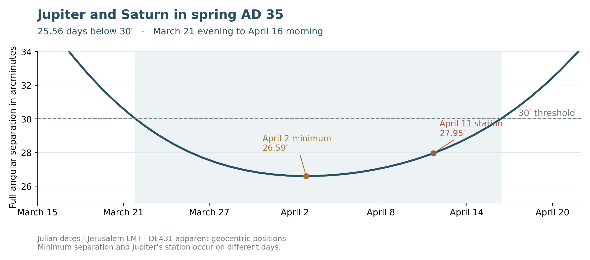
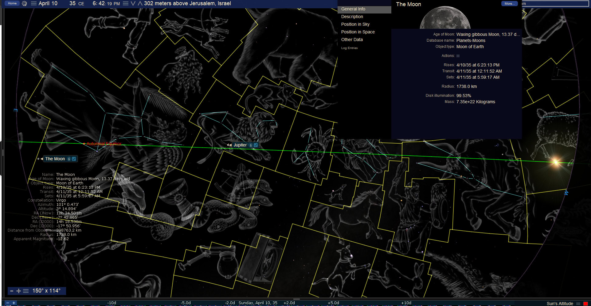
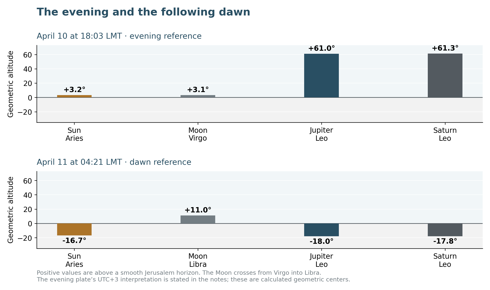
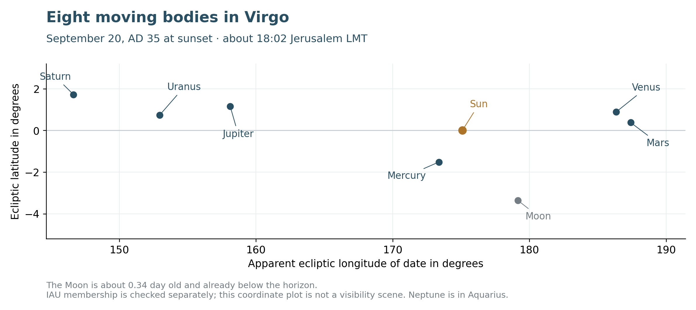
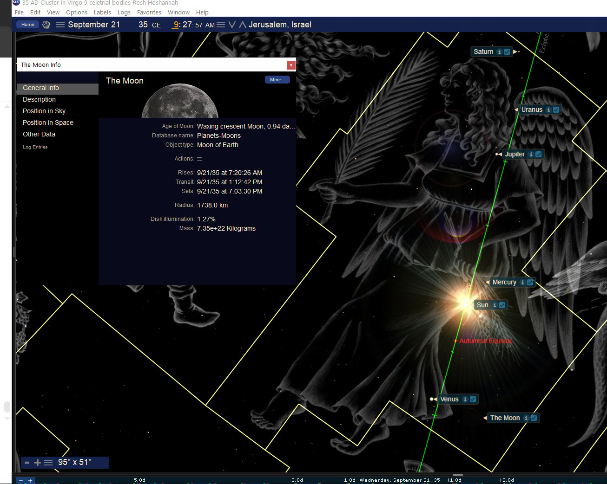

The Woman and the Lion
Book 2 · Celestial Signs of the First Advent · Chapter 12
The AD 34–35 sky beside the exalted Christ and His witnesses
“And a great sign appeared in heaven: a woman clothed in the sun, with the moon under her feet and a crown of twelve stars on her head.”
— Revelation 12:1, BSB[1]
The Woman’s sign returns after the scenes surrounding Christ’s birth. This time the setting is AD 34–35, after the Cross and the Ascension in the chronology followed here. Jupiter and Saturn draw close in Leo, remain near one another through the following spring, and later join a larger company in Virgo. I read that movement beside the authority of the ascended Christ and the people who bear His testimony on earth.
John’s vision gives a reason to follow the imagery beyond the birth. The Child is caught up to God and His throne. The Woman remains within the conflict, and the dragon turns against her other children. Birth, heavenly rule, preservation, and persecution belong to the same account. The Woman can therefore carry the history of the covenant people through whom Christ comes and among whom His testimony continues.[2]
That is the movement I am examining in these later skies. The Lord has been received in heaven. On earth, His witnesses face resistance, and the Gospel begins to move outward. The heavens can address that history even where the people living through it have no knowledge of the arrangement above them.
The dates below are Julian. Where a local hour matters, I use Jerusalem local mean solar time, abbreviated LMT. Celestial measures are stated at a useful decimal precision and then rounded for the comparison being made; their full reference points remain in the notes.[3]
The royal pair in Leo
Jacob joins the Lion and the scepter in his blessing of Judah. The blessing looks beyond the tribe toward the allegiance of the nations:
“The scepter will not depart from Judah, nor the staff from between his feet, until Shiloh comes and the allegiance of the nations is his.”
— Genesis 49:10, BSB[4]
Numbers adds the star from Jacob and the scepter from Israel. Revelation identifies Christ as the Lion of Judah and then shows John the slain Lamb. These passages give me the royal language through which I approach Leo and the planets gathered within it.
I use Jupiter as the royal figure in this comparison. In this reading, Saturn stands beside it as the counterclaim, associated with Rephan and the worship of the heavenly host. Stephen’s warning about the star of Rephan supplies the scriptural setting for that opposing image. The lights remain God’s creation; the worship directed toward them is the corruption.[5]
On October 5, AD 34, Jupiter and Saturn reach a close apparent approach in Leo. Their least full angular separation is approximately 26.68 arcminutes, or about 0.445°. An arcminute is one sixtieth of a degree, so the pair lies a little less than half a degree apart. At the same time, the Sun is in Virgo.[6]


The supplied view places the two planets within the Lion on the preceding evening. It makes the royal setting easy to see. The exact minimum belongs to the following morning, about 08:03 LMT. I keep the illustration’s displayed date and the calculated minimum distinct.
The autumn equinox had occurred on September 25, and the astronomical new Moon on October 1. Those dates place the scene within the autumn month-opening season. They are separate events. A precise Tishri day depends on the chosen month-opening rule; the planetary minimum itself does not determine it.[7]
From the heavenly perspective, the royal comparison has force without an earthly announcement. Christ’s authority does not wait for an observer to recognize the pattern. I see the scepter beside a rival claim within the Lion’s figure, while the Sun occupies the region through which I read the clothed Woman.
The long approach in the following spring
Jupiter and Saturn remain close enough for the comparison to continue into AD 35. The earth’s movement changes their apparent motion against the stars. A planet may advance, move westward for a time, and then resume its eastward course. At the turning point its motion in that coordinate briefly reaches zero. That is what I mean here by a station.
The pair’s spring separation falls below 30 arcminutes, or half a degree, on the evening of March 21. It stays below that threshold until the morning of April 16. The calculated interval is 25.56 days, about 26 days. This is a sustained approach, extending across several weeks.[8]


Their spring minimum occurs on April 2, at about 18:49 LMT, with a separation of approximately 26.59 arcminutes. Jupiter reaches its western station later, on April 11, about 16:05 LMT. The planets are then approximately 27.95 arcminutes apart. The least separation, the station, and the threshold interval each describe a different part of the same movement.[9]
The distinction matters for the reading. The royal company lingers in Leo. Its meaning need not be confined to one instant at which every measurement reaches an extremum. The Moon can move into the comparison during that longer approach, while Jupiter’s slow turn gives the scene its appearance of standing near Saturn.
The Moon beneath the Woman
The supplied evening view for April 10, AD 35 brings the three figures into one field: the Sun in Aries, the Moon beneath the traditional figure of Virgo, and Jupiter with Saturn in Leo. The Ram supplies the Lamb comparison; the Lion supplies the royal setting; the Moon brings the Woman’s under-feet imagery into the scene.


At the reference time taken from this image’s displayed evening clock, the Sun and Moon are both low above a smooth Jerusalem horizon, while Jupiter and Saturn stand high. The pair is approximately 27.67 arcminutes apart. The image gives a useful view of the relationship as a whole, with the figures and the horizon kept together.[10]
During the following night, the Moon crosses the modern constellation boundary. By April 11 at about 04:21 LMT, it is in Libra, still along the region I describe through the Woman’s feet. At that hour the Moon remains above the horizon, but Jupiter and Saturn have set. The evening view and the dawn view therefore show different portions of the evolving sky.[11]


I retain the expression “under her feet” as figure-language. The Woman’s traditional outline and the modern boundary of Virgo answer different questions. The outline helps us follow the proposed scriptural image; the boundary identifies the Moon’s position on a modern astronomical map. In the evening scene the Moon is in Virgo. In the dawn scene it is in Libra. Its passage between them does not erase the broader image.
The same care applies to the festival comparison. The astronomical new Moon occurs on March 28. In a reconstruction opening Nisan 1 at sunset on March 29, the relevant dates begin as follows:[12]
| Nisan date | Begins at sunset on this Julian date in AD 35 |
|---|---|
| 1 | March 29 |
| 10 | April 7 |
| 13 | April 10 |
| 15 | April 12 |
Under that stated construction, the evening of April 10 opens Nisan 13. The six dates from Nisan 10 through Nisan 15 have their central division between Nisan 12 and Nisan 13. That is the basis of my midpoint-night comparison: the night opening the second half of the six-date sequence.
Nisan 10 recalls Israel’s crossing of the Jordan and the selection of the Passover lamb. Nisan 15 belongs to the departure from Egypt. The night between those memories brings the Woman, the Lamb, and the royal pair into the same proposed reading. Its calendar placement belongs to the declared month reconstruction. Moving the month opening by a day moves the Nisan labels with it.[13]
I find the relationship worth preserving in that form. It joins entry, deliverance, and royal authority within one seasonal scene. The full sky is present before its Maker, including the parts concealed by daylight or lying below a particular human horizon.
The company gathers in Virgo
The following autumn brings a larger grouping. At Jerusalem sunset on September 20, AD 35, the Sun, Moon, Mercury, Venus, Mars, Jupiter, Saturn, and Uranus all occupy modern Virgo. Neptune is in Aquarius. This gives eight moving bodies within the Woman’s astronomical region: the classical seven together with Uranus.[14]


The Moon is approximately 0.34 day past conjunction at that sunset, only about 5.28° from the Sun. Its center is already about 2.18° below the horizon, and its modeled setting precedes the Sun’s by roughly 7 minutes. This is a geometric gathering near new Moon. It supplies no visible-crescent sighting for Jerusalem.
The gathering continues into the following morning. The supplied September 21 view shows that morning arrangement with daylight suppressed. The eight bodies are still within Virgo at its stated reference time. The Moon is then approximately 0.95 day old. A fixed star such as Spica belongs to the illustration’s setting and is counted separately from the moving bodies.[15]


By sunset on September 21 the Moon has moved into Libra. The autumn equinox follows on September 25. The grouping, the Moon’s boundary crossing, and the equinox therefore belong to a sequence spread across several days. Their relation can be read without forcing them onto one evening or making an inherited feast label determine the astronomy.[16]
The seasonal movement is clear. In the first autumn, the Sun clothes the Woman’s region while the royal pair stands in Leo. In the spring, the Sun is in Aries and the Moon passes beneath the Woman’s figure while the pair lingers in the Lion. In the following autumn, the larger company gathers in Virgo. I read that return as a continuation of the same royal witness around the exalted Christ and His people.
The memory of the wilderness
The calendar comparison also carries the reader back to the Exodus and the Jordan. At corresponding Nisan dates, the year counts under the chronology used throughout this book are straightforward:[17]
| Corresponding seasonal anchors | Elapsed years | Forty-year form |
|---|---|---|
| 1406 BC to AD 35 | 1,440 | 36 × 40 |
| 1446 BC to AD 35 | 1,480 | 37 × 40 |
The first span reaches from the Conquest year; the second from the Exodus year. Their difference preserves the 40 years between the two events. The same comparison can be made between the preceding autumn seasons, provided those autumn endpoints are named explicitly. The Nisan Exodus and Conquest anchors retain their place.
The numbers place the proposed spring scene within the memory of a people brought out, sustained through the wilderness, and brought into an inheritance. Revelation’s Woman is also sustained in the wilderness. The connection rests first in that scriptural history. The seasonal sky and its measured intervals are the further witness I am examining beside it.
There is an earlier planetary echo as well. Chapter 1 introduced the 7 BC Jupiter–Saturn triple in Pisces. The AD 34 approach comes about 40 years later, after roughly two of their meeting cycles. The setting has changed from the Fishes to the Lion. I bring the two settings together within the book’s longer movement from the birth framework toward the rule of Christ and the testimony carried to the nations.[18]
Heaven opened above the witness
Stephen gives this chapter its earthly and heavenly setting. His speech moves through Abraham, Joseph, Moses, the Exodus, the wilderness, and the sanctuary. He also names Israel’s corruption of worship through the heavenly host. The same creation that can bear witness to God can be turned into an idol by those beneath it.
Then Stephen looks upward:
“Look,” he said, “I see heaven open and the Son of Man standing at the right hand of God.”
— Acts 7:56, BSB[19]
That is the height from which I want to consider the royal scenes. On earth Stephen is about to be killed. In heaven he sees the Son of Man at God’s right hand. The violence below does not overturn the authority above. His death becomes part of the testimony, and the scattering that follows carries the word beyond Jerusalem.
The Repository places AD 34–35 within the post-Passion expansion of Acts, especially the movement associated with Stephen, Paul, and the Gentile mission. Acts itself does not give a Julian date for Stephen’s death. I therefore place the celestial sequence beside that wider movement without assigning his vision to the moment of a planetary minimum.[20]
I am proposing that the heavens bear witness to the same authority Stephen sees revealed. The Woman, the Lamb, and the Lion return because the Child’s rule concerns the people who remain on earth. Their suffering is real. So is His authority, and it endures beyond the men who oppose them.
This gives the next movement of the book its direction. We will turn to Jerusalem and the sword in the sky, following the ancient reports toward the war and the fall of the city. The Gospel is already moving among the nations. To read that history from heaven, we must keep both the suffering on earth and the rule above it in view.[21]
Source notes
1. Revelation 12:1, BSB, reproduced exactly. The translation prints “clothed in the sun” and “twelve.” The following argument returns to the birth imagery of Book 2, Chapter 2, in a post-Ascension setting. Return
2. Revelation 12:5–6, 13–17. The movement from the Child’s birth and enthronement to the Woman and her other children is in the vision. Reading the AD 34–35 celestial arrangements beside that movement is the author’s interpretation. File 21, Part VI, Axiom 21.1 supplies the Repository’s related theological context. Return
3. Jerusalem 35.235° E, 31.778° N, elevation 754 m; LMT = UT + 2h20m56.4s. Swiss compressed DE431 supplies the reference ephemeris; explicit Moshier is a comparison. NASA’s −500 to AD 500 ΔT polynomial converts TT to UT. Diagnostic seconds identify the calculation, not an ancient recovered clock. Rounding also governs the earlier approximately 1,211-day celestial spans: Chapter 9’s three greatest-to-greatest intervals are about 1210.609, 1210.964, and 1211.113 TT days. Chapter 11 gives approximately 1151.06 chart-reference days, which is about 1150 days. Integer civil-date subtractions retain their own meaning. Return
4. Genesis 49:9–10, verse 10 quoted exactly from the BSB; Numbers 24:17; Revelation 5:5–6. Leo, Jupiter, and Aries are the author’s applications of the Lion, scepter, and Lamb imagery; those applications are not translations of constellation names in these passages. Return
5. Amos 5:25–27; Acts 7:42–43. The source’s Saturn–Rephan association is retained as part of its interpretive framework. Stephen’s condemnation concerns idolatry. No verse identifies the AD 34 conjunction or directs worship toward a planet. Return
6. Julian October 5, AD 34, noon-UT date index 1733754. DE431 minimum: UT 05:42:17 / LMT 08:03:14; TT JD 1733753.856157413; separation 26.682826′. Both planets are IAU Leo; Sun IAU Virgo. Direct JPL Horizons DE441 coordinates reproduce the angular separation to better than 0.001 arcsecond at this reference instant. These checks supersede the working master’s 27.124′ and 09:56 UT values. No canonical date state is changed. Return
7. DE431 autumn equinox: Julian September 25, AD 34, UT 07:50:41; new Moon: October 1, UT 03:49:47. The minimum follows on October 5. A conjunction, an equinox, and a Hebrew month opening have separate definitions. File 12, §6 preserves the Nisan default and explicitly named Tishri states. Return
8. DE431’s continuous full-angular separation is below 30′ from Julian March 21, AD 35, UT 17:49:30 / LMT 20:10:27, until April 16, UT 07:19:25 / LMT 09:40:21. Duration 25.562426 TT days, about 25.56 days or 26 days. Moshier gives 25.686502 days; both retain a sustained spring approach. The threshold interval is not the length of a selected daily table. Return
9. Spring minimum: Julian April 2, AD 35, UT 16:28:09 / LMT 18:49:06; 26.592879′. Jupiter station: April 11, UT 13:43:52 / LMT 16:04:48; pair separation 27.948195′. Station means apparent geocentric ecliptic longitude speed changing from negative to positive. Direct JPL coordinates confirm the pair separations at these reference times. The working master’s 27.481′ minimum and before-dawn station wording are superseded. Return
10. Original archive IMG0041 displays April 10, AD 35 at 18:42:19 on its software clock. The calculation treats that display as UTC+3, consistent with the related Starry Night source family, giving UT 15:42:19 / LMT 18:03:15. DE431 geometric center altitudes: Sun +3.177°, Moon +3.129°, Jupiter +60.965°, Saturn +61.272°; pair separation 27.674256′. Original software readouts remain unchanged; they are not substituted for the stated model. All four bodies occupy the named traditional regions in this evening view. Return
11. Julian April 11, AD 35 at UT 02:00 / LMT 04:20:56: Sun IAU Aries, Moon IAU Libra, Jupiter/Saturn IAU Leo. Geometric center altitudes are −16.750°, +11.025°, −18.040°, and −17.778°, respectively. The pair has set by this dawn reference. Thus the working master’s dawn geometry must not be described as four bodies simultaneously above the Jerusalem horizon. The evening and dawn remain useful separate views. Return
12. New Moon: Julian March 28, AD 35, UT 04:09:46 / LMT 06:30:43. At March 29 sunset, the Moon is approximately 1.489 days old, 20.97° from the Sun, with geometric center altitude +19.19°. The table declares that sunset as the month opening; it is not a recovered crescent observation. A different opening changes the day labels, while the absolute celestial instants remain fixed. Return
13. Exodus 12:3, 6; Numbers 33:3; Joshua 4:19 and 5:10. Nisan 10–15 contains six labeled days. Its central division is between days 12 and 13. “Midpoint night” here means the night opening the second half of that six-date construction, not an exact astronomical midpoint or a date fixed independently by the station. Return
14. At Julian September 20, AD 35 sunset, about 18:02:29 LMT, all seven classical bodies and Uranus are in IAU Virgo; Neptune is in Aquarius. Sun setting uses upper limb and standard refraction at 927 hPa / 15°C, smooth level horizon, with no terrain or horizon dip. The planetary longitudes and constellation assignments are geometric data; the Woman interpretation is the author’s reading. Return
15. Original IMG0193 displays September 21, AD 35 at 09:27:57 on its software clock. Under the declared UTC+3 interpretation, this is UT 06:27:57 / LMT 08:48:53. DE431 still places the eight bodies in Virgo; Moon age 0.952760 TT day and Sun altitude +37.13°. Its dark sky suppresses daylight. The source’s title and inherited feast terminology do not establish a ninth wanderer or a historical Rosh Hashanah observation. Return
16. September 20 conjunction: UT 07:35:59 / LMT 09:56:55. At sunset: Moon age 0.337199 TT day, elongation 5.2777°, geometric center altitude −2.180°; modeled upper-limb moonset precedes sunset by 6.798 minutes. At September 21 sunset the Moon is IAU Libra, age 1.336309 days. Equinox: Julian September 25, UT 13:37:53 / LMT 15:58:50. These current DE431 values supersede the working master’s nearby approximate numbers. Return
17. Civil BC/AD has no year zero: 1406 + 35 − 1 = 1440 = 36 × 40; 1446 + 35 − 1 = 1480 = 37 × 40. File 05, File 06, and File 18 retain the primary Exodus and Conquest anchors. Explicit preceding-autumn comparisons give 1407 BCt → AD 34t = 1440 and 1447 BCt → AD 34t = 1480; they do not move the Nisan events into those autumns. Return
18. The reference DE431 7 BC minima occur on Julian May 29, September 30, and December 5, at about 59.08′, 58.48′, and 63.25′; both planets are in Pisces. The forty-year comparison is 7 + 34 − 1 = 40 at corresponding seasonal year points. It is a rounded relation between moving scenes, not a claim of exactly forty solar years between individual minima. The original 6 BC historical birth anchor and the separate later birth-sign sequence remain as Chapters 1–2 explain. Return
19. Acts 7:55–60, verse 56 reproduced exactly from the BSB. Acts 8:1–4 connects the ensuing persecution, scattering, and preaching. The celestial “standing” comparison does not identify the physical mechanism or civil date of Stephen’s vision. Return
20. File 13, §0.4 and its Christological state controls: AD 34–35 belongs to the post-Passion Acts expansion field; AD 33 remains the preferred Passion state, AD 30 possible. AD 34’s separate completed-purification display is also not a Passion date. Neither this chapter nor its planetary geometry substitutes for File 13’s AD 36t/37n bracket. Return
21. This book’s Chapter 13 follows the sword-star report and Jerusalem’s war; Chapter 14 treats the later fish-shaped eclipse comparison. The transition makes no new identification of an ancient object or exact prediction of Jerusalem’s destruction. Return
Scripture quotations are from the Berean Standard Bible (BSB), public domain.
← Previous: Chapter 11 — The Morning Star and the Ascended Lamb
Book 2 contents
Next: Chapter 13 — Jerusalem and the Sword in the Sky →